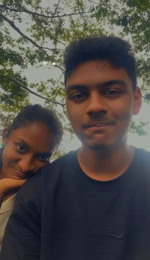

DEPARTMENT OF EXTREMELY IMPORTANT MATTERS
OFFICIAL ARCHIVE • RECORD 0602
CERTIFICATE OF
PERMANENT CLAIM
Official record of the permanent claim of
ADAN ♡
CLAIMED BY NULAYA
PERMANENTLY CONFIRMED ✓
Claim Date: 02.06.2026
CERTIFICATE NO. BBY-0602-FOREVER
*This is a completely serious and definitely legitimate document.
SUBJECT RECORD
OFFICIAL CLAIM DECLARATION
This document officially confirms that Adan has been claimed by Nulaya.
The claim is permanent, non-transferable, and carries no expiration date.
The subject shall retain the official designation "Her Bby".
TRANSFERABILITY: ABSOLUTELY NOT
EXPIRATION: NONE
CLAIM HISTORY
Initial contact established: "hey dude."
Official claim established and confirmed.
Two-month claim review completed. Status unchanged.
Three-month claim review completed. Permanent claim remains active.
Historical Note: Tapir became involved. Further details classified. 👀
CLAIM CONDITIONS
- Subject is officially designated as Her Bby. ♡
- Claim is permanent.
- Subject may be called bby at any time.
- Green is the official favourite colour.
- Tapir is an accepted alias.
- Claim does not expire.
- Claim remains valid despite distance.
- Claim holder reserves the right to be ridiculously attached.
CLAIM COMPLETION: 100%
STATUS: COMPLETE ✓
OFFICIAL CLAIM ANTHEM
This song has been added to the official claim archive.
Press play to continue reading the record.
CLAIM VERIFICATION
Click below to verify the official claim.
SUPPORTING EVIDENCE
Official photographic evidence associated with this claim.

EXHIBIT A
Evidence accepted. ♡
EXHIBIT B
Evidence accepted. 💚
EXHIBIT C
Evidence accepted. ✨OFFICIAL FINAL NOTICE
After extensive review of the available evidence, the claim remains active.
There have been good days. There have been confusing days. There have been arguments, overthinking, missed replies, headaches, and moments where neither party knew what the hell was going on.
But there have also been the little things.
The random conversations. ♡
The stupid jokes. 💚
The songs. ♫
The memories that somehow became important.
The moments that made an ordinary day
feel a little less ordinary.
The laughs that probably made absolutely
no sense to anyone else. 😭
Somewhere between the chaos, the distance, the nonsense, and the countless reasons to overthink, this idiot became someone who matters a lot.
This record was never created because everything was perfect.
It was created because even with the headaches, there was something worth holding onto.
And after all the evidence has been reviewed:
THE CLAIM REMAINS PERMANENT.
The Tapir has been claimed.
Please respect the decision.
CLAIM: ACTIVE
STATUS: PERMANENT
EXPIRATION: NEVER
♡ TO BE CONTINUED... ♡
This record is not yet complete.
A PRIVATE NOTE TO THE SUBJECT
Babe,
I don't think I could fit everything I feel into an official record, even if I gave this department another 500 pages.
You've given me some of my favourite little memories, made me laugh at the dumbest things, and somehow managed to become such an important part of my life.
We've had our headaches too. We've misunderstood each other, overthought things, gotten upset, and had moments where things weren't easy.
But I still love the little things about us.
The conversations. The jokes. The music. The memories. The way some completely ordinary moments somehow end up meaning so much.
So yeah, this entire ridiculous certificate exists because apparently simply saying "I love you" wasn't dramatic enough. 😭
Thank you for being you, donkeyy.
I love you, and I'm really glad our story is still being written.
Claim status: still permanent. ♡
END OF CURRENT RECORD.